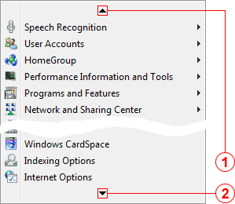
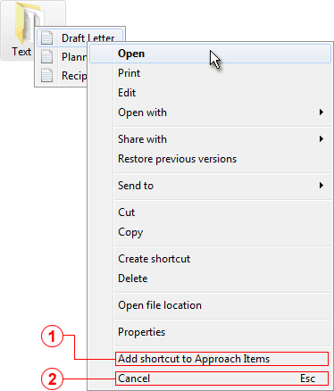

KO Approach features three functionally independent built-in components, Folder Menus, Approach Items, and Titlebar Menus which can work separately or in combination with each other. The functionality of these components (which might sometimes be referred to as the "Main Features") is further expanded by means of Plug-Ins that are either part of the original install or a third-party product.
For detailed information about the main components and the plug-ins, please refer to the following topics in this section:
Whenever a menu has too many items to fit within the height of the screen, some items will remain beyond the screen boundaries and will need to be scrolled to. To indicate that the menu has not reached its bottom/top, a downward/upward arrow will appear on the menu.
To access an item that is currently invisible, position the pointer over the arrow. The menu will begin scrolling in the desired direction. Alternatively, you can scroll using the mouse wheel or the keyboard.
The speed of scrolling is adjusted with a slider on the Menus & Scrolling tab.
Upward arrow
Indicates that some items at the top of the menu are currently invisible and need to be scrolled to.
Downward arrow
Indicates that some items at the bottom of the menu are currently invisible and need to be scrolled to.
KO Approach has full support for contextual menus. When navigating, right click on any item, and a contextual menu will appear offering quick access to a wide variety of common tasks, such as Cut, Copy, Create Shortcut, etc. KO Approach slightly modifies standard contextual menus by adding items at the bottom.

Add shortcut to Approach Items item
Creates a shortcut to the currently selected file/folder and places it in the KO Approach Items directory so that the former is further accessible through the Approach Items feature. If the CTRL key is pressed while this item is chosen, KO Approach creates the _Target shortcut instead. This menu item is only present when Approach Items is turned on.
Cancel item
Closes the contextual menu without exiting the currently open set of menus (i.e., non-contextual ones). The keyboard shortcut for this item is Esc.
Contextual menus can be further extended through plug-ins. For example, the ClipboardAssistant plug-in inserts additional items improving folder and shortcut manipulation.